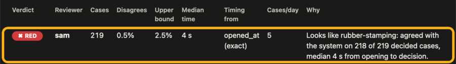

Needs Python 3.10 or newer.
$ pip install stampcheckEight weeks of made-up refund approvals. sam is the rubber stamp.
$ stampcheck demoThe report opens in your browser.

One row per case: an ID, who, what, when, and what the system recommended.
$ stampcheck check --source your_approvals.csvIt prints where the report is saved and how to open it.
Every reviewer and approval step gets one colour.
Log when a reviewer opened the case. Timings become exact.
stampcheck.record_review(
case_id, recommended, decision, reviewer,
opened_at=opened_at, decided_at=decided_at)Run it weekly. Slack only pings when something turns RED or starts drifting.
$ stampcheck check --source your_approvals.csv \
--alert "slack:$SLACK_WEBHOOK_URL"on:
schedule:
- cron: "0 7 * * 1" # every Monday, 07:00 UTCWant to see how it decides? Try the 20-minute hands-on tutorial →
Rather have your coding agent set it up? Agent instructions →